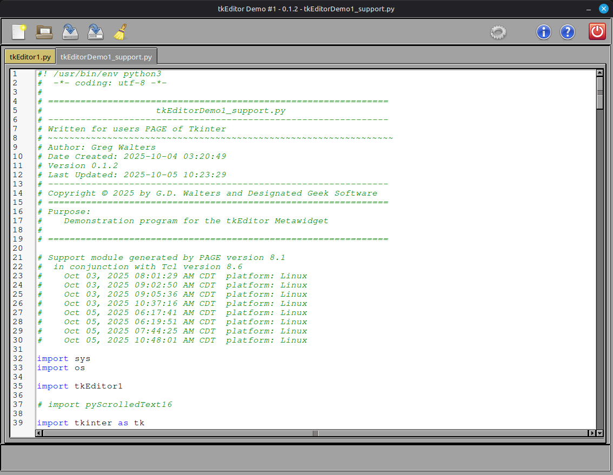
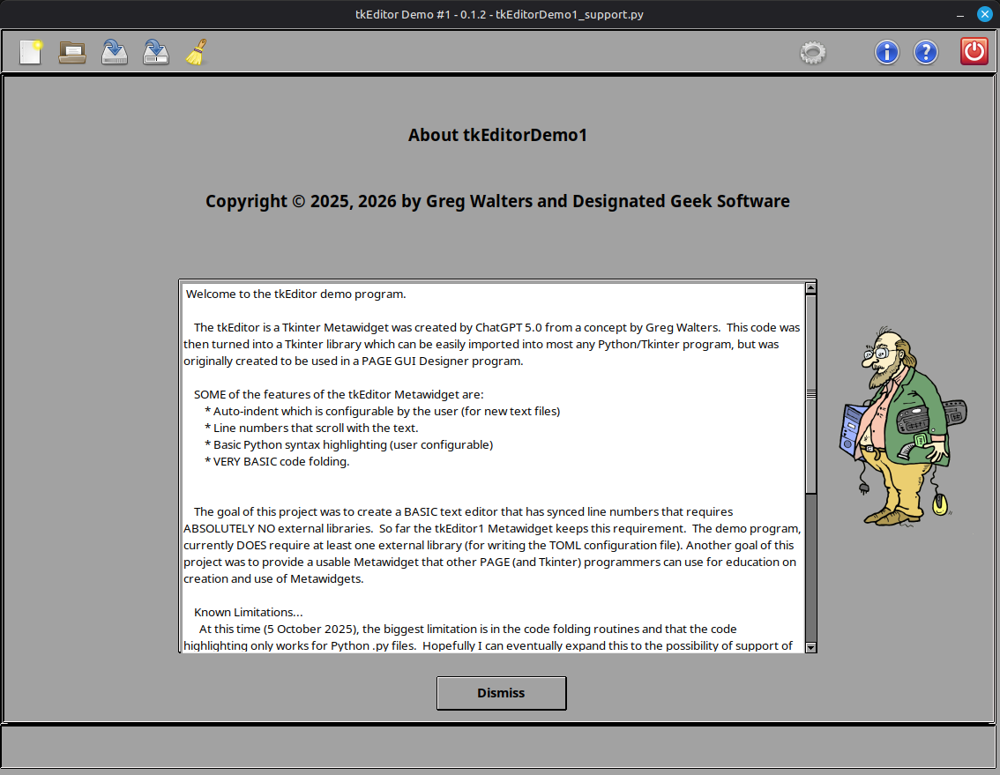
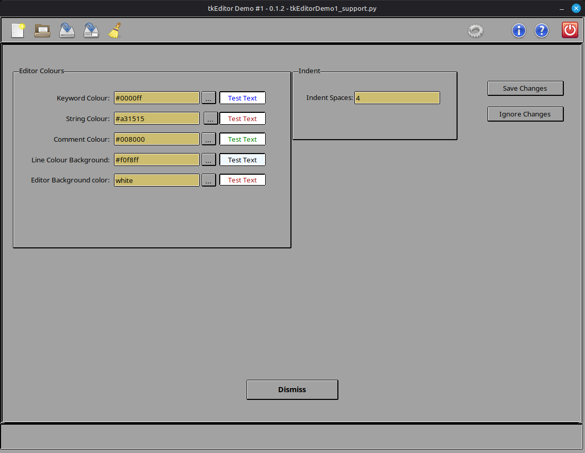
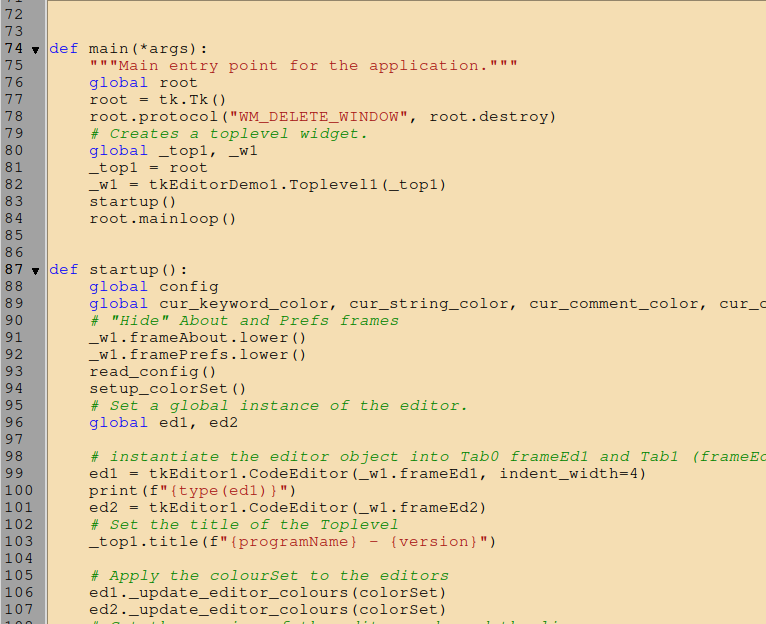
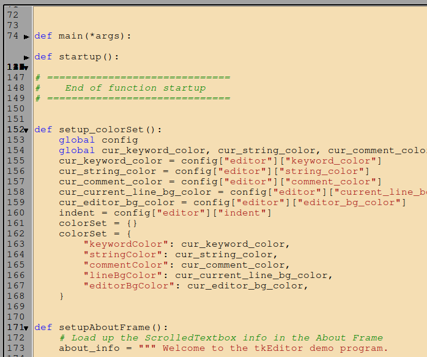

Welcome to tkEditor1 documentation¶
This project was created by Greg Walters with the help of ChatGPT.
{kind=link}

Note
Please note that this project (the tkEditor1 Metawidget and the demo program) is currently under development so things might change. Please check back every once and a while to see if there are any changes.
Some background¶
I originally wanted to create a small editor metawidget that had line numbers that other PAGE users (and other Tkinter programmers) could easily integrate into their own programs. Another of the requirements was that there was the functionality of auto-indent using a user settable variable. Luckily, one of the other features was at the suggestion of ChatGPT to ad syntax highlighting for Python. It took a number of attempts for ChatGPT to get the coding correct and to the point I took over.
One of my goals from the outset, was that the tkEditor1 metawidget not use any libraries outside of the standard internal Python libraries. So far this goal has been maintained.
The tkEditorDemo1 program¶
The demo program itself has three frames that act as ‘windows’
{kind=link}

There is nothing special about the About frame.
{kind=link}

The Preferences frame, however has (at the moment) one Labelframe that allows the setting of various colours for the editor and another that allows the user to set the number spaces that should be used for the auto-indent.
Note
Changing the auto-indent ONLY sets the indent level for NEW empty documents only.
The demo program uses the “Norwegian Lift” feature of PAGE 8.x to raise various frames to the top of the Widget stack to make it look like the all other frames have disappeared and that the new frame is at the forefront.
Using tkEditor1 Metawidget¶
Using the tkEditor1 Metawidget in your own project is very simple, especially if you are using PAGE to design your project.
Where ever you want to have the tkEditor1 widget show up in your project, simply place an empty tk Frame or ttk TFrame.
ed1 = tkEditor1.CodeEditor(_w1.frameEd1, indent_width=4)
You have just enabled the metawidget into your program. (The indent_width parameter is optional).
If you want to modify the colour set, like from the Prefs Frame, simply call the editor _update_editor_colours() method passing the colourset object.
You can also access the metawidget version and license constants by using the following code in your program…
libVer = ed1.get_version()
libLic = ed1.get_licence()
Here is the class definition and init functions. You should be able to easily change things to fit your needs.
class CodeEditor(tk.Frame):
__version__ = "0.1.3"
__license__ = "MIT"
global _debug2
_debug2 = False
def __init__(self, master=None, indent_width=4, **kwargs):
super().__init__(master, **kwargs)
self.pack(fill="both", expand=True)
# Left: gutter, middle: text, right: vscroll
self.gutter_frame = tk.Frame(self)
self.gutter_frame.pack(side="left", fill="y")
self.text_frame = tk.Frame(self)
self.text_frame.pack(side="left", fill="both", expand=True)
self._set_editor_colours()
# Use CodeText
self.text = CodeText(
self.text_frame,
indent_width=indent_width,
wrap="none",
font=("Courier", 12),
undo=True,
background="#a2a2a2",
)
Currently known issues and limitations¶
I’m not terribly happy with the line fold code. In my mind, it mostly works, but there is room for improvement. The original ChatGPT code was clumsy and when code was folded, the line numbers over wrote each other leaving a mess. I’ve gotten it somewhat fixed, but I want to do more.
For example, here’s what the unwrapped code looks like…
{kind=link}

And here is the wrapped code…
{kind=link}

You can see there is a great deal more work to be done.
I also want to add things like font and wrap to the initialization routine of the metawidget, and to the config.toml file in the demo program. How soon this will happen is yet to be seen.
As to limitations, the code fold routine and syntax highlight current only are supported for Python files. One day, I might have time to look into supporting other file types like .tcl, .rst, and so on.
Copyright and License¶
tkEditor1 and tkEditor1Demo1 are copyright © 2025, 2026 by Greg Walters and Designated Geek Software.
They are both covered under the MIT license.